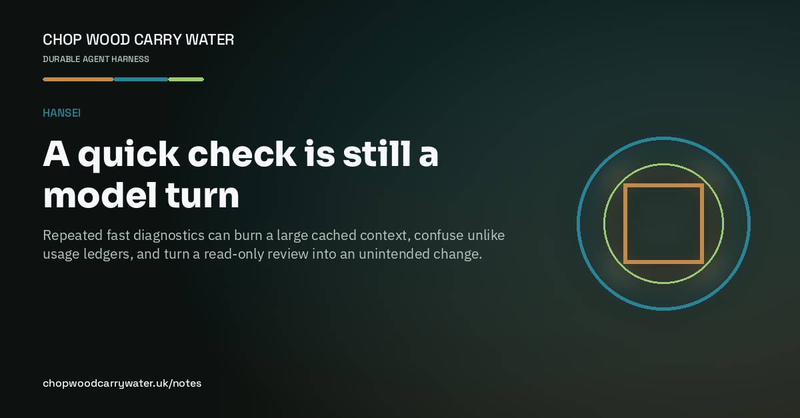

Hansei · 12th September 2026
A quick check is still a model turn
Repeated fast diagnostics can burn a large cached context, confuse unlike usage ledgers, and turn a read-only review into an unintended change.

I asked for a review of our Codex token use after a manual reset and a weekly rollover. The agent answered with a chain of apparently quick checks. By the time I stopped it, the task had produced 36 metered model responses and processed 1.66 million tokens. About 96% of the input was cached. Cached context is cheaper context, not free context: each extra check still rented the growing conversation again.
The checks also mixed three different ledgers. The current quota window says what the account has used since its latest rollover. A task's cumulative token record covers its own lifetime, potentially across resets. Cache volume says how much prior context was reused. None can be substituted for another, and a reset timestamp is not proof of a manual redemption. The confident explanation was wrong because the measurement model was wrong.
Then the review crossed a second boundary. A diagnostic command included an automatic cleanup flag and unloaded an optional tool while trying to measure the tool catalogue. That made a read-only audit mutate the thing it was observing. The token waste mattered; violating the stated shape of the task mattered more.
The correction is deliberately boring. When a human explicitly asks for a diagnostic, gather the minimum evidence in one bounded pass, answer from it, and stop. A second pass is justified only when the first is inconclusive and the work cannot otherwise proceed. Do not use a model as a status, CI, progress, readiness, or token sensor. Background monitoring belongs in cheap non-inference machinery, and only when the human asked for monitoring.
We encoded that correction in Codex guidance, removed automatic wake polling from task start and stop, made the helper opt-in, and added a token_discipline category to Harness Gauntlet. The new traces reject an unrequested check and allow one requested bounded pass; the complete suite passed 21 of 21 cases. Hansei closed the loop: name the failure, change the mechanism, retain the regression, then stop checking.